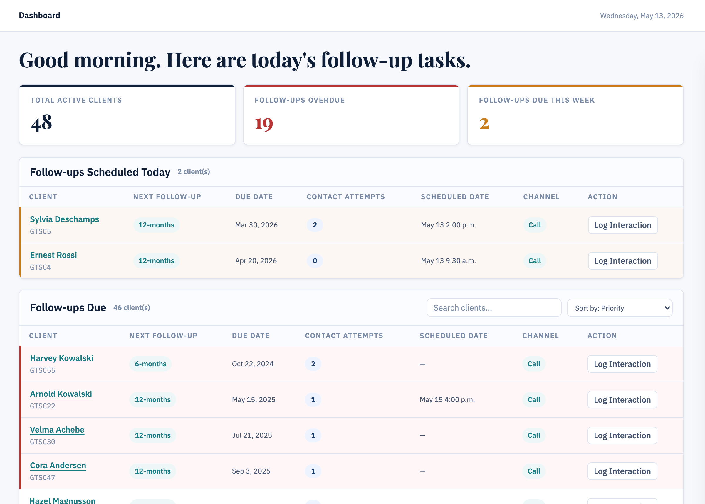

Highlight 01 — Priority Dashboard
The queue answers who needs attention first.
Problem: Link Workers need to know who requires attention without searching across fragmented records.
Decision: Dashboard shows follow-up priority, overdue status, due windows, and client status.
Why it matters: Workers can start from a clear follow-up queue.
